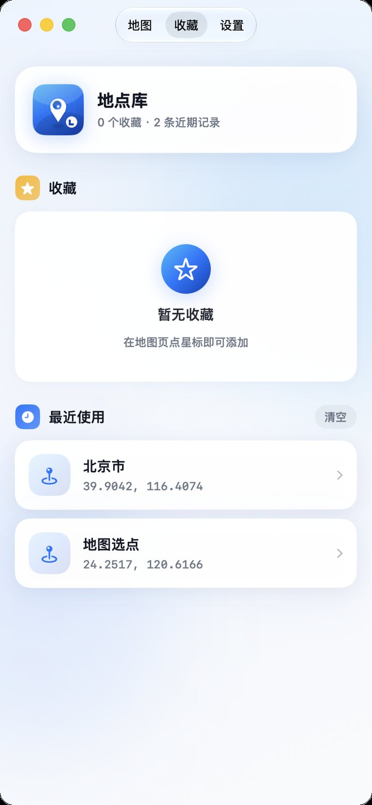
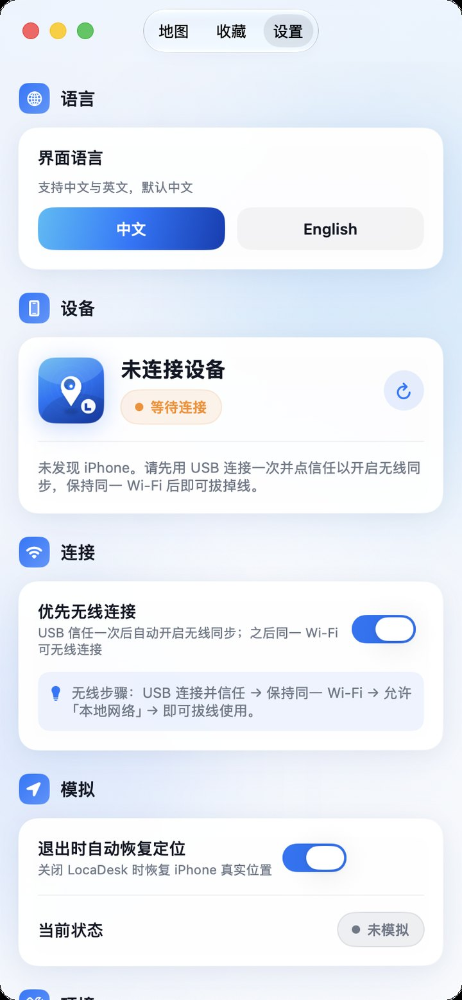

01
地图选点
搜索城市 / 地址 / 经纬度，或直接点地图，坐标一目了然。
Capabilities
只做定位模拟该做的事，流程短、反馈清楚。
搜索城市 / 地址 / 经纬度，或直接点地图，坐标一目了然。
开始模拟、更新到此处、恢复真实位置，三步走完。
USB 信任一次后，同一 Wi‑Fi 可继续使用（需开发者模式）。
常用地点收藏，最近使用可回看，回归测试更省事。
设置里检查更新，自动对比官网 version.json。
默认中文，设置一键切换 English。
Preview
窄窗口也能舒服用，接近手机竖屏比例。


Get started
第一次使用建议按下面顺序走一遍。
终端执行：pip3 install -U pymobiledevice3
iPhone：设置 → 隐私与安全性 → 开发者模式（开启后重启确认）。
解锁手机，点「信任此电脑」。无线使用时保持同一 Wi‑Fi，并允许「本地网络」。
打开 LocaDesk → 选点 → 开始模拟位置。退出时可自动恢复真实定位。
macOS 14+ · DMG 安装包 · 非 App Store